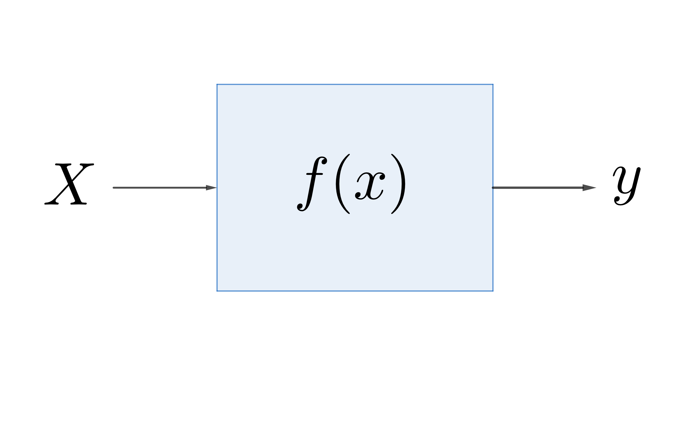
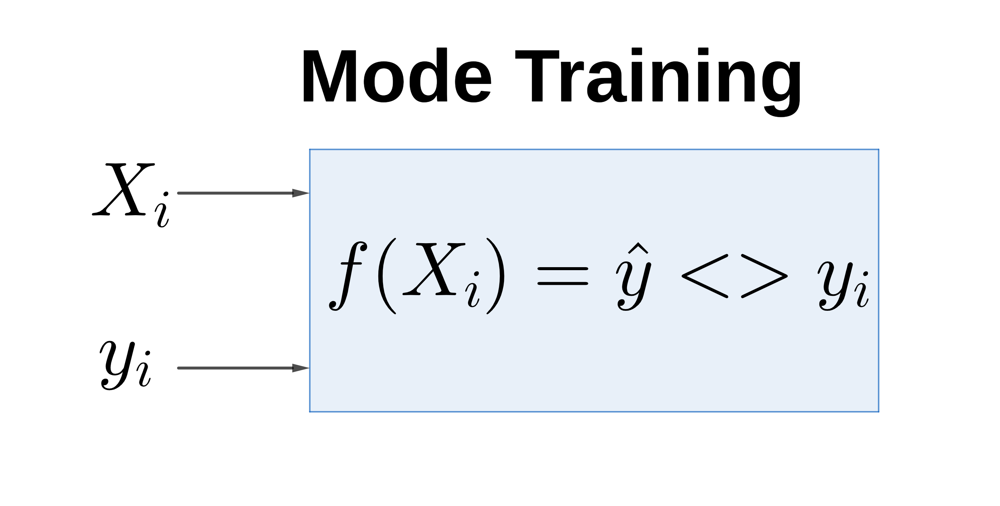
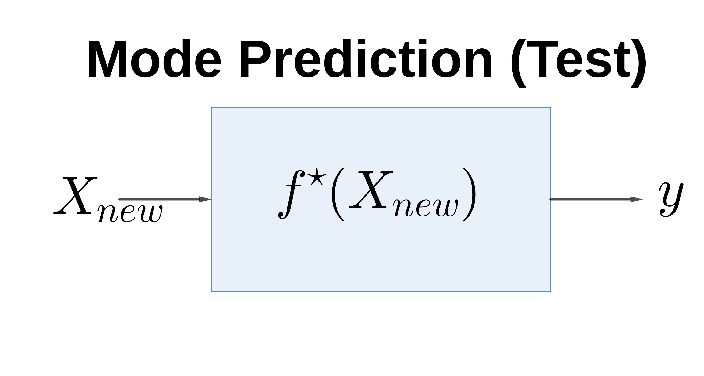
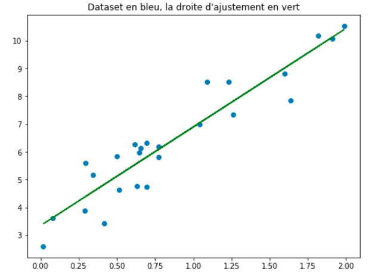
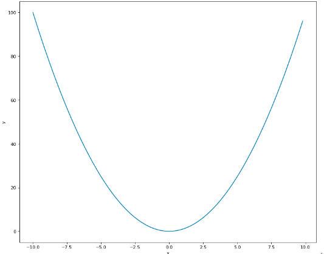

Apprentissage Supervisé¶
Dans ce chapitre, nous allons explorer l’apprentissage supervisé. Ce type d’apprentissage, aussi connu sous le nom d’apprentissage avec tutelle (maître), permet de déterminer la relation qui existe entre une variable explicative \(\mathbf{X}\) et une variable à expliquer (étiquette) \(\mathbf{y}\). En d’autres termes, l’apprentissage supervisé est le processus permettant à un modèle d’apprendre, en lui fournissant des données d’entrée ainsi que des données de sortie. Cette paire d’entrée/sortie est généralement appelée «données étiquetées». Dans un cadre illustratif, pensez à un enseignant qui, connaissant la bonne réponse à une question, évaluera un élève en fonction de l’exactitude de sa réponse à cette question. Pour plus de clarification, comparons l’approche de l’apprentissage automatique à la programmation traditionnelle.
Dans la programmation traditionnelle, comme illustré dans la figure 1.1, nous avons une fonction \(f\) connue qui reçoit la donnée en entrée \(\mathbf{x}\) et renvoie la réponse correspondante \(\mathbf{y}\) en sortie. Par exemple, nous pouvons penser à écrire une fonction \(f\) qui calcule le carré d’un nombre; si nous donnons en entrée le nombre \(2\), notre programme va nous renvoyer la valeur \(\displaystyle f(2) = 2^2 = 4 = y\).
Fig. 2 L’approche traditionnelle¶
L’approche de la programmation utilisée dans l’apprentissage automatique est tout à fait différente de la précédente. Dans cette dernière, nous ne connaissons pas la fonction \(f\) et nous voulons donc l’approximer par une fonction \(\hat{f}\) en utilisant les données à notre disposition. Cette approche est donc divisée en deux phases. La première est la phase où nous entraînons notre fonction \(\hat{f}\) (figure 1.2). Si nous revenons à notre exemple précédent, cette étape pourra consister à présenter à la fonction \(\hat{f}\), plusieurs couples de nombres et leurs carrés \(\{(2, 4), (3, 9), (4, 16), \cdots\}\). L’objectif ici est de trouver un moyen d’estimer la fonction “carrée” en observant uniquement les données à notre disposition.
Fig. 3 L’approche apprentissage automatique¶
La dernière étape consiste à fournir un nouveau nombre à notre fonction \(f^\star\), obtenue après l’étape \(1\), afin qu’elle prédise (approximativement) le carré de ce nombre.
Fig. 4 L’approche apprentissage automatique¶
Dans la suite du cours, nous reviendrons beaucoup plus en détails sur les étapes ci-dessus présentées.
L’apprentissage supervisé est souvent utilisé pour deux types de problèmes: les problèmes de régression et les problèmes de classification.
Problèmes de Régression¶
Dans l’apprentissage supervisé, on parle de problèmes de régression lorsque la variable à expliquer \(\mathbf{y}\) est continue. Par exemple lorsqu’on veut prédire le prix d’une bouteille de vin sur la base de certaines variables (le pays de fabrication, qualité, le taux d’alcool, etc.). Il s’agit bel et bien d’un problème de régression.
La Régression Linéaire¶
La régression linéaire est un problème de régression pour lequel le modèle ou la fonction dépend linéairement de ses paramètres [@reg_lin]. Les différents types de régression linéaire que nous connaissons sont la régression linéaire affine, la régression linéaire polynomiale et la régression linéaire à fonctions de base radiales. Dans ce document, nous allons nous focaliser sur deux types fondamentaux de régression linéaire: la régression linéaire affine et la régression linéaire polynomiale.
La régression linéaire affine¶
Une régression linéaire de paramètre \(\boldsymbol{\theta}\) est dite affine si pour tout \(\mathbf{x} \in \mathbb{R}^d.\)
avec \(\boldsymbol{\theta}_0 \in \mathbb{R}\) et \(\boldsymbol{\theta}_1 \in \mathbb{R}^d.\) Le terme \(\left[ 1, \mathbf{x}\right]\) est appelé attribut du modèle et il sera noté par \(\phi(\mathbf{x}).\)
Fig. 5 Représentation graphique d’un exemple de données d’entraînement¶
La méthode explicite
Dans le cas de la régression linéaire affine, la méthode explicite peut-être utilisée par le biais de l’estimation du maximum de vraisemblance qui interpelle la notion de probabilité conditionnelle.
Pour être plus concret, nous allons considérer l’expression suivante:\(y_i = f_{\boldsymbol{\theta}} (\mathbf{x}_i) + \varepsilon~~~\) avec \(\varepsilon \sim N(0, \sigma^2)\).Dans cette expression, nous supposons que \(f\) est la fonction que nous allons estimer à partir de son paramètre \(\boldsymbol{\theta}\) et qui nous permettra de faire nos prédictions pour chaque élément donné à partir du domaine d’entraînement. Nous noterons par \(\hat f\) comme étant la fonction estimée de \(f\).
Pour une suite de points \((\mathbf{x}_1, y_1), (\mathbf{x}_2, y_2),..., (\mathbf{x}_n, y_n)\) représentant le domaine d’entraînement nous supposons que les \(y_i\) suivent chacun une loi normale et qu’ils sont aussi indépendants et identiquement distribués (i.i.d).
Alors, nous avons \(\mathbf{x} = \left\lbrace \mathbf{x}_1, \mathbf{x}_2, ..., \mathbf{x}_n\right\rbrace \in \mathbb{R}^{n \times d}\) et \(\mathbf{y} = \left\lbrace y_1, y_2, ..., y_n\right\rbrace \in \mathbb{R}^{n}\).
Déterminons le paramètre \(\boldsymbol{\theta} ^{*}\) qui maximise la vraisemblance.
(77)¶\[\begin{split}\begin{aligned} \mathbb{P}(y_1, y_2,.., y_n| \mathbf{x}_1, \mathbf{x}_2, \cdots \mathbf{x}_n; \boldsymbol{\theta}) &= \mathbb{P}(\mathbf{y}|\mathbf{x}; \boldsymbol{\theta}) \\ &= \prod_{i}^{n}\mathbb{P}(y_i| \mathbf{x}_i, \boldsymbol{\theta})~~ \text{avec } y_i \sim N(\boldsymbol{\theta}^T \mathbf{x}_i; \sigma^2)\end{aligned}\end{split}\]Dans ce cas nous avons:
(78)¶\[\mathbb{P}(y_i| \mathbf{x}_i; \boldsymbol{\theta}) = \frac{1}{\sigma \sqrt{2\pi }}\exp \left(-\frac{(yi - \boldsymbol{\theta}^T \mathbf{x_i})^2}{2 \sigma^2}\right).\]Nous savons que, la fonction logarithme est une fonction strictement croissante, ce qui implique que le paramètre \(\boldsymbol{\theta} ^*\) qui maximise la vraisemblance maximise aussi le logarithme-vraisemblance. Ainsi, en appliquant le logarithme de la vraisemblance, nous avons:(79)¶\[\log \mathbb{P}(\mathbf{y}| \mathbf{x}; \boldsymbol{\theta}) = \sum_{i=1}^{n} \log \mathbb{P}(y_i| \mathbf{x}_i; \boldsymbol{\theta}).\]Pour chaque \(i \in \left\lbrace 1, 2, ..., n\right\rbrace ,~\log \mathbb{P} (y_i| \mathbf{x}_i; \boldsymbol{\theta}) =\log\left(\frac{1}{\boldsymbol{\sigma} \sqrt{2\pi}}\right)~ -\frac{\left(y_i - \boldsymbol{\theta}^T \mathbf{x}_i\right)^2}{2 \sigma^2}\)
(80)¶\[\begin{split}\begin{aligned} \implies \log \mathbb{P} (\mathbf{y}| \mathbf{x}; \boldsymbol{\theta}) &= -\frac{1}{2 \sigma^2} \sum_{i=1}^{n}(y_i - \boldsymbol{\theta}^T \mathbf{x}_i)^2 +c^{ste} \\ \\ &= -\frac{1}{2 \sigma^2} (\mathbf{y} - \boldsymbol{\theta} \mathbf{x})^T (\mathbf{y} - \boldsymbol{\theta} \mathbf{x}) + c^{ste}\end{aligned}\end{split}\]Ainsi, la dérivée partielle du logarithme de la vraisemblance par rapport à \(\boldsymbol{\theta}\) est donnée par:
(81)¶\[\begin{split}\begin{aligned} \dfrac{\partial \log \mathbb{P} (\mathbf{y}| \mathbf{x}, \boldsymbol{\theta})}{\partial \boldsymbol{\theta}} & = \frac{\partial}{\partial \boldsymbol{\theta}} \left( -\frac{1}{2 \sigma^2} (\mathbf{y} - \mathbf{x} \boldsymbol{\theta})^T (\mathbf{y} - \mathbf{x} \boldsymbol{\theta} ) + c^{ste} \right) \\ \\ %& = -\frac{1}{\sigma^2} (y - \boldsymbol{\theta} X)^T (y - \boldsymbol{\theta} X) & = \frac{1}{\sigma^2} \mathbf{x}^T(\mathbf{x}\boldsymbol{\theta} - \mathbf{y}).\end{aligned}\end{split}\]Alors, résoudre l’équation:
(82)¶\[\displaystyle \frac{\partial \log \mathbb{P}(\mathbf{y}| \mathbf{x}, \boldsymbol{\theta})}{\partial \boldsymbol{\theta}} = 0\]nous permettra de trouver la valeur de \(\boldsymbol{\theta}^*\).
(83)¶\[\begin{split}\begin{aligned} \frac{\partial \log \mathbb{P}(\mathbf{y}| \mathbf{x}, \boldsymbol{\theta})}{\partial \boldsymbol{\theta}} &=0,\\ \mathbf{x}^T(\mathbf{x}\boldsymbol{\theta} - \mathbf{y}) &= 0, \\ \mathbf{x}^T\mathbf{x}\boldsymbol{\theta} &= \mathbf{x}^T\mathbf{y}.\end{aligned}\end{split}\]En supposant que la matrice \(\mathbf{x}^T\mathbf{x}\) est inversible nous avons :
(84)¶\[\boldsymbol{\theta}^{*} = (\mathbf{x}^T\mathbf{x})^{-1}\mathbf{x}^T\mathbf{y}.\]Alors, vu que nous avons déterminé le paramètre \(\boldsymbol{\theta}^{*}\), la fonction \(\hat{\boldsymbol{f}}\) associée au paramètre \(\boldsymbol{\theta}^{*}\), souvent appelée “hypothèse” ou “modèle” s’écrit comme
(85)¶\[\hat{\boldsymbol{f}}(\mathbf{x}) = \boldsymbol{\theta}^{*}\mathbf{x}.\][droite]
Fig. 6 Représentation graphique de la fonction \(\hat{f}\) définie dans l’ensemble \(X\) à valeur dans \(\mathbb{R}\).¶
La méthode explicite nous permet d’obtenir la solution exacte de l’équation [equat]. Tout de même, trouver cette solution exacte est souvent très compliquée dans le cas où l’étude se fait sur un grand ensemble de jeux de données (la complexité pour trouver l’inverse dans l’équation [star] est \(\mathcal{O}(n^{3})\)). Pour cela, dans ce qui suit, nous allons présenter des méthodes alternatives qui nous permettront de donner une valeur approchée à la solution exacte.
Méthodes approximatives
Dans cette partie, nous allons utiliser une méthode itérative pour estimer la valeur des paramètres de l’équation suivante:(86)¶\[\mathbf{y}=\boldsymbol{\theta} \mathbf{x}\],
où \(\boldsymbol{\theta} \in \mathbb{R}^{d+1}\) est le vecteur de paramètres à estimer; \(\mathbf{X} = \left\lbrace \mathbf{x}_1, \mathbf{x}_2, ..., \mathbf{x}_n\right\rbrace \in \mathbb{R}^{n \times (d+1)}\) et \(\mathbf{y} = \left\lbrace y_1, y_2, ..., y_n\right\rbrace \in \mathbb{R}^{n}\) les données. $$La fonction de perte
La fonction de perte mesure la différence entre la valeur observée et la valeur estimée. En apprentissage automatique, l’objectif est d’optimiser la fonction de perte. Il existe différentes fonctions de perte selon le critère (ou métrique permettant d’évaluer la performance du modèle) adopté(e). Dans cette partie, nous allons utiliser l’erreur quadratique moyenne (appelé Mean Square Error (MSE) en anglais) pour définir notre fonction de perte.
L’erreur quadratique moyenne entre le \(\mathbf{y}\) observé et le \(\mathbb{\hat{y}}\) prédit est donnée par:
(87)¶\[\begin{aligned} \operatorname{MSE}(\mathbf{y}, \hat{\boldsymbol{y}}) & = \frac{1}{n}\sum_{i=1}^{n}(y_i - \hat{y}_i)^2,\end{aligned}\]où \(n\) est la dimension des vecteurs \(\mathbf{y}\) et \(\hat{\boldsymbol{y}}\).
Dans le cas de la régression linéaire, cette fonction peut être réécrite comme étant une fonction \(E\) de \(\boldsymbol{\theta}\).
(88)¶\[E\left(\boldsymbol{\theta}\right) = \frac{1}{n}\sum_{i=1}^{n}(y_i - \boldsymbol{\theta}^{T} \mathbf{x}_i)^2.\]Par conséquent, le paramètre \(\boldsymbol{\theta}\) qui correspond à la meilleure ligne d’ajustement sera tout simplement la valeur qui minimise la fonction de perte \(E\). Pour cela, nous allons introduire une méthode la plus souvent utilisée pour minimiser une fonction (éventuellement convexe) dans l’apprentissage automatique à savoir la descente de gradient.
[f_convexe]
Fig. 7 Représentation graphique d’une fonction convexe¶
Descente de gradient {GD}¶
La descente de gradient est une procédure itérative d’optimisation dans laquelle, à chaque étape, on améliore la solution en essayant de minimiser la fonction de perte considérée [@desc_grad]. Elle est appliquée lorsque l’on cherche le minimum d’une fonction dont on connaît l’expression analytique, qui est dérivable, mais dont le calcul direct du minimum est difficile.
Pour entamer cette procédure, nous allons commencer par initialiser le paramètre \(\boldsymbol{\theta}\). Ensuite, nous calculons la dérivée partielle de la fonction \(E\) par rapport au paramètre \(\boldsymbol{\theta}\) donnée par:
Pour trouver les meilleurs paramètres, nous allons répéter le processus ci-dessous jusqu’à ce que la fonction de perte soit très proche ou égale à \(0\).
La valeur de \(\boldsymbol{\theta}\) trouvée après convergence est la valeur optimale que nous noterons par \(\boldsymbol{\theta}^*\).
Alors, concernant l’exemple de la figure 1.4, notre hypothèse ou modèle sera représenté par une droite d’ajustement de la même forme que celle en couleur verte sur la figure 1.5. Cette droite est d’équation:
\(\mathbf{y} = \boldsymbol{\theta}^*\mathbf{x}\).
class LinearRégression(): def __init__ (self): pass def fonction_perte(self, y_vrai, y_prédit): définit une fonction de perte et retourne sa valeur def algorithme(self, \(\mathbf{x}\), \(\mathbf{y}\), taux_apprentissage, nombre_itération): initialiser les paramètres \(\boldsymbol{\theta}_0\) et \(\boldsymbol{\theta}_1\)
for i in range(nombre_itération): prédiction(x), calcule la perte au moyen de fonction_perte, mise à jour des paramètres \(\boldsymbol{\theta}_0\) et \(\boldsymbol{\theta}_1\), return \(\boldsymbol{\theta}_0\), \(\boldsymbol{\theta}_1\), def prédiction(self, \(\mathbf{x}\)): y_prédit \(= \boldsymbol{\theta}_0^T \mathbf{x} + \boldsymbol{\theta}_1\), return y_prédit
Un exemple d’implementation de régression linéaire est disponible ici
La régression linéaire polynomiale¶
La régression linéaire de paramètre \(\boldsymbol{\theta}\) est dite polynomiale si pour tout \(\mathbf{x} \in \mathbb{R}^d,\)
avec comme attribut le vecteur \(\phi (\mathbf{x}) = \left[ 1, \mathbf{x}^1, ..., \mathbf{x}^m\right]^T\). Ainsi, deux méthodes existent pour déterminer le meilleur paramètre \(\boldsymbol{\theta}^*\).
Estimation par la méthode du maximum de vraisemblance (appelée MLE: Maximum Likelihood Estimation): Suivant de manière analogique de la détermination du paramètre \(\boldsymbol{\theta}^*\) sur la partie précédente, la meilleure valeur du paramètre \(\boldsymbol{\theta}^{*}\) est déterminée par \(\boldsymbol{\theta}^*= (\mathbf{x}^T \mathbf{x})^{-1}\mathbf{x}^T\mathbf{y}.\)
Estimation par la méthode d’un posteriori maximal (appelée MAP: Maximum A Posteriori): La méthode consiste à trouver la valeur \(\boldsymbol{\theta}^{*}_{\mathrm{MAP}}\) qui maximise le produit entre la vraisemblance et la distribution à priori des paramètres \(\boldsymbol{\theta}\) comme l’indique l’équation [naivebayes]. Cette méthode d’estimation apparaît généralement dans un cadre bayésien. Tout comme la méthode du maximum de vraisemblance, elle peut être utilisée afin d’estimer un certain nombre de paramètres inconnus, comme les paramètres d’une densité de probabilité, reliés à un échantillon donné. La seule différence avec la méthode de maximum de vraisemblance est sa possibilité de prendre en compte un à priori non uniforme sur les paramètres à estimer. Ainsi, nous pouvons dire que l’estimateur au maximum de vraisemblance est l’estimateur MAP pour une distribution à priori uniforme. Par le théorème de Bayes, nous pouvons obtenir le postérieur comme un produit de vraisemblance avec :
(92)¶\[\begin{split}\begin{aligned} \mathbb{P}\left(\boldsymbol{\theta}|\mathbf{y};\mathbf{x} \right) &= \frac{\mathbb{P}\left(\mathbf{y};\mathbf{x}|\boldsymbol{\theta}\right) \mathbb{P}\left(\boldsymbol{\theta} \right)}{\mathbb{P}\left(\mathbf{y};\mathbf{x}\right)} \\ & \propto \mathbb{P}\left(\mathbf{y};\mathbf{x}|\boldsymbol{\theta}\right)\mathbb{P}\left(\boldsymbol{\theta}\right).\nonumber \end{aligned}\end{split}\]
Avec \(\mathbf{Y}| \boldsymbol{\theta} \sim \mathcal{N}(\boldsymbol{\theta}^T \mathbf{x}, \sigma^2)\) et \(\boldsymbol{\theta} \sim \mathcal{N}(\mathbf{0}, \lambda^2 \mathbf{I})\) où \(\mathbf{I}\) représente la matrice identité dont la dimension est la longueur du vecteur \(\boldsymbol{\theta}\). Ainsi, nous pouvons écrire la vraisemblance comme:
En utilisant la fonction logarithme, nous avons
Et le paramètre à estimer \(\boldsymbol{\theta}^*\) correspond au \(\boldsymbol{\theta}\) qui annule la dérivée partielle de \(\log \mathbb{P}(\mathbf{y}| \mathbf{x}, \boldsymbol{\theta})\) par rapport à \(\boldsymbol{\theta}\).
\(\displaystyle \frac{\partial \log \mathbb{P}(\mathbf{y}| \mathbf{x}, \boldsymbol{\theta})}{\partial \boldsymbol{\theta}} = 0 \Longleftrightarrow \frac{\partial \log}{\partial \boldsymbol{\theta}}\left(-\frac{1}{2 \sigma^2}||\mathbf{y} - \boldsymbol{\theta} \mathbf{x}||^2 -\frac{1}{2 \lambda^2}||\boldsymbol{\theta}||^2 + c^{te} \right) = 0\).
\(\linebreak\) Ceci revient à déterminer le \(\boldsymbol{\theta}\) qui annule l’expression
Alors,
Cas Pratique
Les Problèmes de Classification¶
A la différence avec le problème de régression, la classification est un autre type de problème d’apprentissage supervisé où la variable à prédire est discrète (ou qualitative ou catégorique). Cette variable discrète peut être binaire (deux classes) ou multiple (multi-classe). Par exemple lorsqu’on veut catégoriser si un e-mail reçu est un ‘spam’ ou “non-spam” il s’agit bel et bien d’un problème de classification.
L’algorithme des \(K\) plus proches voisins (\(K\)-NN)¶
L’algorithme des \(K\) plus proches voisins aussi appelé \(K\)-Nearest Neighbors (\(K\)-NN) en anglais est une méthode d’apprentissage supervisé utilisée pour la classification aussi bien que la régression () [@goodfellow2016deep]. Il est compté parmi les plus simples algorithmes d’apprentissage automatique supervisé, facile à mettre en oeuvre et à comprendre.
Toutefois dans l’industrie, il est plus utilisé pour les problèmes de classification. Son fonctionnement se base sur le principe suivant: dis moi qui sont tes voisins, je te dirais qui tu es …
L’objectif de cet algorithme est de déterminer la classe d’une nouvelle observation \(x\) en fonction de la classe majoritaire parmi ses \(K\) plus proches voisins. Donc l’algorithme est basé sur la mesure de similarité des voisins proches pour classifier une nouvelle observation \(x\).
La méthode des \(K\) plus proches voisins, où \(K\) représente le nombre de voisins proches est une méthode non-paramétrique. Cela signifie que l’algorithme permet de faire une classification sans faire d’hypothèse sur la fonction \(y=f(\mathbf{x}_1,\mathbf{x}_2, \dots \mathbf{x}_n)\) qui relie la variable dépendante \(\mathbf{y}\) aux variables indépendantes \(\mathbf{x}_1,\mathbf{x}_2, \dots, \mathbf{x}_n\).
Soit \(\mathcal{D}\) l’ensemble des données ou l’échantillon d’apprentissage, défini par:
où \(y_i \in \{1,\dots,c\}\) dénote la classe de la donnée \(i\) et \(\mathbf{x}_i=(\mathbf{x}_{i1}, \dots, \mathbf{x}_{im})\) est le vecteur représentant les variables (attributs) prédictrices de la donnée \(i\).
Supposons un nouveau point \(\textbf{p}\) pour lequel nous voulons prédire la classe dans la quelle il doit appartenir comme indiqué dans la figure 1.7.
Fig. 8 Classification d’un nouveau point entre deux classes¶
La première chose à faire est de calculer la distance entre le point \(\textbf{p}\) avec tous les autres points. Ensuite trouver les \(K\) points les plus proches de \(\textbf{p}\). C’est-à-dire les \(K\) points dont la distance avec \(\textbf{p}\) est minimale. Les \(K-\)points plus proches de \(\textbf{p}\) dans l’échantillon d’apprentissage sont obtenus par:
Pour tout \(i \in \{1, \dots, n\}, d_{p, i} := \{ d(p, \mathbf{x}_i), ~ i = 1, \dots, n \}\) où \(d\) est une fonction de distance. Et en suite la classe prédite de \(\textbf{p}\) notée \(\hat{\textbf{y}}\) est la classe majoritairement représentée par les \(k\) voisins.
Les points similaires ou les points les plus proches sont sélectionnés en utilisant une fonction de distance telle que la distance euclidienne [Euclidienne], la distance de Manhattan [Manhattan] et la distance de Minkowski [Minkowski]. On choisit la fonction de distance en fonction des types de données manipulées, par exemple dans le cas où les données sont quantitatives et du même type, c’est la distance euclidienne qui est utilisée.
Les points les plus proches de \(P\) sont trouvés en utilisant une fonction de distance telle que la distance Euclidienne, la distance de Minkowski et la distance de Manhattan.
Algorithme¶
Soient \(\mathcal{D}\) un échantillon d’apprentissage des observations \(\mathbf{x}_i\) relatives à une classe \(y_i\) \(\mathcal{D}=\{(\mathbf{x}_i, y_i), i=1, \dots,n\}\) et \(\textbf{p}\) une nouvelle observation dont la classe \(\hat{c}\) doit être prédite. Les étapes de l’algorithme: Ainsi, l’algorithme se présente comme suit:
Choisir le paramètre \(K\), le nombre de voisins les plus proches;
Calculer la distance de la nouvelle observation \(\textbf{p}\) avec tous les autres échantillons selon une fonction de distance choisie \(d(p, \mathbf{x}_i);\)
Sélectionner les \(K\) plus proches voisins de \(\textbf{p}\);
Former la collection \(K_c\) des étiquettes des \(K\) plus proches voisins de \(\textbf{p}\);
Et la classe de \(\textbf{p}\), \(\hat{c}\) est choisie d’après la majorité des \(K_c\) plus proches voisins, c’est-à-dire
(99)¶\[\hat{c}=\mbox{Mode}(K_c)\].
Répéter l’étape 2 à 5 pour chaque nouveau point à classifier.
L’algorithme [algorithme_knn] nous présente le pseudo-code de la méthode de plus proches voisins.
Un ensemble de données \(\mathcal{D} = \{(\mathbf{x}_i, y_i)\}, i = 1, \dots,n\) Choisir une fonction de distance \(d\) Choisir un nombre \(K \in \mathbb{N}^*\) Pour une nouvelle observation \(\textbf{p}\) dont on veut prédire la classe \(\hat{c}\): Calculer la distance \(d(\textbf{p},\mathbf{x}_i)\) Retenir les \(K\) observations proches de \(\textbf{p}\): \(\underset{\mathbf{x}_i}{K-\arg \min}\ \{d(\textbf{p},\mathbf{x}_i), i=1, \dots, n\}\) Prendre les valeurs \(\displaystyle y_{k}\) des \(K\) observations retenues: Si on effectue une régression: \(\hat{c}= \frac{1}{K}\sum_{k=1}^{K} y_k\) (la moyenne ou la médiane des \(y_k\) retenues) Si on effectue une classification : Calculer le mode des \(y_k\) retenues Retourner \(\hat{c}\), la valeur qui a été prédite par \(K\)-NN pour l’observation \(\textbf{p}\).
Comment choisir la valeur de \(K\) ?¶
En générale, le choix de la valeur de \(K \in \mathbb{N}^{*}\) dépend du jeu de données. Pour la classification binaire (en deux classes) par exemple il est préférable de choisir la valeur \(K\) impaire pour éviter les votes égalitaires. Historiquement, la valeur optimale de \(K\) pour la plupart de données est choisie entre 3 et 10 [@shalev2014understanding].
Une optimale valeur de \(K\) peut être sélectionnée par diverses techniques heuristiques dont la validation-croisée (que nous allons expliquer ci-dessous).
Notons que, si l’algorithme est utilisé pour la régression, c’est la moyenne (ou la médiane) des variables \(\mathbf{y}\) des \(K\) plus proches observations qui sera utilisée pour la prédiction. Et dans le cas de la classification, c’est le mode des variables \(\mathbf{y}\) des \(K\) plus proches observations qui servira pour la prédiction.
Validation-croisée (Cross-Validation)
La Validation-croisée (Cross-validation) est une méthode très populaire utilisée pour estimer la performance d’un algorithme. C’est une méthode statistique souvent utilisée dans des procédures d’estimation et aussi pour la sélection de modèles [@chen2019mehryar].
Son principe est le suivant :
séparer les données en données en deux échantillon (apprentissage et validation);
construire l’estimateur sur l’échantillon d’apprentissage et utiliser l’échantillon de validation pour évaluer l’erreur de prédiction;
Répéter plusieurs fois le processus et enfin faire une moyenne des erreurs de prédiction obtenues.
C’est une technique très utilisée pour le choix de meilleurs paramètres et hyperparamètres d’un modèle, par exemple pour le choix de la meilleure valeur de \(K\) dans l’algorithme de plus proches voisins (\(K\)-NN).
On distingue les variantes suivantes de la technique de validation-croisée:
\(K\)-fold cross-validation : Partitionnement des données en \(K\) sous-ensembles. Chaque sous-ensemble sert à tour de rôle d’échantillon de validation et le reste de sous-ensembles d’échantillon d’apprentissage. En pratique la valeur de \(K\) varie entre \(5\) et \(10\).
Leave-one-out cross-validation: qui signifie de laisser à tour de rôle une observation comme échantillon de validation et le reste des données comme échantillon d’apprentissage. C’est un \(n\)-fold validation-croisée avec \(n\), le nombre total d’observations.
Leave-\(q\)-out qui signifie de laisser à tour de rôle \(q\) observations comme échantillon de validation et le reste des données comme échantillon d’apprentissage. C’est une \(\lceil \frac{n}{q}\rceil\)-fold validation-croisée.
D’une manière générale, la procédure de partitionnement des données se présente souvent comme suit:
Les données d’apprentissage permettent de trouver un estimateur.
Les données de validation nous permettent de trouver les meilleurs paramètres du modèle.
Les données test permettent de calculer l’erreur de prédiction finale. Notons que cette méthode de validation-croisée est utilisée pour tous types d’algorithme d’apprentissage.
Les avantages de l’algorithme de \(K\)-NN¶
Il est simple, facile à interpréter.
Il n’existe pas de phase d’apprentissage proprement dite comme c’est le cas pour les autres algorithmes, c’est pour cela qu’on le classifie dans le Lazy Learning.
Offre des performances très intéressantes lorsque le volume de données d’apprentissage est trop large.
Le temps d’exécution est minimum par rapport à d’autres algorithmes de classification.
Il peut être utilisé pour classification et régression.
Il ne fait pas d’hypothèse (linéaire, affines,..) sur les données.
Les limitations de l’algorithme de \(K\)-NN¶
L’algorithme a plus besoin de mémoire car l’ensemble des données doivent être garder dans cette dernière pour pouvoir effectuer la prédiction d’une nouvelle observation à chaque fois.
Sensibles aux attributs non pertinents et non corrélés.
L’étape de la prédiction peur être lente dû au calcul de distance de chaque nouvelle observation avec les jeux de données en entier à chaque prédiction.
Le choix de la fonction de distance ainsi que le nombre de voisins \(K\) peut ne pas être évident. C’est ainsi qu’il faut essayer plusieurs combinaisons(en utilisant la méthode de validation-croisée) pour avoir un bon résultat.
Exemple pratique¶
Ci-dessous, nous allons prendre un exemple simple pour comprendre l’intuition derrière l’algorithme de \(K\)-NN. Considérons le tableau de données ci-dessous qui contient la taille (feet), l’âge (année) et le poids(en kilogramme) de \(10\) personnes où ID représente l’identifiant de chaque personne dans le tableau. Comme vous le remarquez le poids du ID \(11\) est manquant. Nous allons appliquer l’algorithme de \(K\)-NN pour prédire le poids de la personne ID 11.
ID |
Taille |
Âge |
Poids |
|---|---|---|---|
1 |
5 |
45 |
77 |
2 |
5.11 |
26 |
47 |
3 |
5.6 |
30 |
55 |
4 |
5.9 |
34 |
59 |
5 |
4.8 |
40 |
72 |
6 |
5.8 |
36 |
60 |
7 |
5.3 |
19 |
40 |
8 |
5.8 |
28 |
60 |
9 |
5.5 |
23 |
45 |
10 |
5.6 |
32 |
58 |
11 |
5.5 |
38 |
? |
[tab:rrr]
Nous pouvons représenter graphiquement les données du tableau 1.1 en se basant sur la taille et l’âge.
Comme nous le remarquons, le point rouge (ID 11) est notre nouvelle observation dont nous voulons prédire la classe dans laquelle il appartient.
Étape 1: Commençons par choisir le nombre des voisins les plus proche. Pour notre cas prenons \(K=5\).
Étape 2: Calculer la distance entre le nouveau point (rouge) avec tous les autres points
Fig. 9 La distance euclidienne entre nouvelle observation et tous les autres points¶
Étape 3: Sélectionner les \(5\) plus proches voisins.

Fig. 10 Sélection de \(5\) plus proches voisins¶
Étape 4: Pour la valeur de \(K=5\), les points les plus proches sont \(1,\ 4,\ 5,\ 6\text{ et } 10.\)
Étape 5: Ainsi, comme la classe des points \(4,\ 6\) et \(10\) est majoritaire donc le point \(11\) se classifie dans cette classe. Et comme c’est un cas de la régression, la prédiction pour ID11 est la moyenne de ces 5 voisins les plus proches c’est-à-dire \((77+59+72+60+58)/5=65.2\ Kg\). Ainsi le poids prédit pour ID11 est \(65.2\ Kg\).
L’algorithme du Perceptron¶
L’algorithme de perceptron est un algorithme d’apprentissage supervisé utilisé pour la classification binaire (c’est-à-dire séparant deux classes). C’est l’un des tout premier algorithme d’apprentissage supervisé et de réseau de neurones artificiels le plus simple. Le terme vient de l’unité de base dans un neurone qui s’appelle perceptron.
C’est un type de classification linéaire, c’est-à-dire que les données d’apprentissage sont séparées par une droite classées dans des catégories correspondantes de telle sorte que si la classification à deux catégories est appliquée, toutes les données sont rangées dans ces deux catégories. Dans ce cas on cherche à trouver un hyperplan qui sépare correctement les données en deux catégories. Comme nous le voyons dans la figure 1.12 ci-dessous.
|L’algorithme du perceptron| |L’algorithme du perceptron|
L’idée générale de l’algorithme du perceptron est d’initialiser le vecteur de poids réels \(\mathbf{w} \in \mathbb{R}^d\) au vecteur nul ou à une variable aléatoire, itérer un nombre de fois jusqu’à la convergence sur les données d’apprentissage.
Soient \(\mathcal{D} = \{(\mathbf{x}_i, y_i)\}^{n}_{i=1}\), un ensemble de données où \(\mathbf{x}_i \in \mathbb{R}^d\) est le vecteur d’entrées de dimension \(d\) et l’étiquette \(y_i \in \{-1,1\}\); \(\mathbf{w} \in \mathbb{R}^d\) un vecteur poids de dimension \(d\).
L’objectif est de trouver un hyperplan \(\mathbf{w}.\mathbf{x} + b=0\) qui sépare les deux classes. Le terme \(b\) est l’intercepte appelé aussi “bias term” et \(\mathbf{w}\cdot \mathbf{x}\) est le produit scalaire défini par \(\langle \mathbf{w},\mathbf{x} \rangle := \sum_{s=1}^{d} w_{s} \mathbf{x}_{s}\).
C’est-à-dire apprendre le vecteur \(\mathbf{w}\) tel que:
#### Algorithme
Soient les données d’apprentissage \(\mathcal{D} = \{(\mathbf{x}_1, y_1), \dots, (\mathbf{x}_n, y_n)\}\) où \(\mathbf{x}_i \in \mathbb{R}^d\), \(y_i \in \{-1,1\}\) et \(T\) le nombre d’itérations. L’algorithme se présente comme suit:
Initialiser le vecteur \(\mathbf{w} \leftarrow 0\) Pour itération de 1 à T: ** Pour** chaque exemple \((\mathbf{x}_i, y_i) \in \mathcal{D}:\) Calculer la prédiction \(\hat{y_i} = \operatorname{signe }( \mathbf{w}. \mathbf{x}_i +b )\) ** Si** \(\hat{y_i} \neq y_i\) alors Ajuster \(\mathbf{w} :\) par \(\mathbf{w_{t+1}} \leftarrow \mathbf{w_t}+\mathbf{x}_i\) si \(y_i\) est positive \(\mathbf{w_{t+1}} \leftarrow \mathbf{w_t}-\mathbf{x}_i\) si \(y_i\) est négative Fin si Fin pour Fin pour
L’avantage de l’algorithme de perceptron est sa simplicité et son efficacité de séparer linéairement les données d’apprentissage. Néanmoins, tous les hyperplans qui séparent les données sont équivalents.
L’algorithme ne peut séparer et converger vers la solution uniquement que si les données d’apprentissage sont linéairement séparables. Aussi, il n’est pas efficace quand il y a beaucoup d’attributs.
La Régression Logistique¶
La régression logistique est une méthode de classification simple mais puissante, pour les données binaires, et elle peut facilement être étendue à plusieurs classes. Considérons d’abord le modèle de régression le plus simple, correspondant à celui que nous avons vu précédemment, pour effectuer la classification. Nous le trouverons bientôt totalement insuffisant pour ce que nous voulons réaliser et il sera instructif de voir exactement pourquoi. Le modèle de la régression linéaire comme défini dans l’équation [reg_lin], peut se réécrire comme:
où \(\mathbf{X}\) est une matrice de taille \(n\times d\) et \(\boldsymbol{\theta} \in \mathbb{R}^{d}\).
Comme dans de nombreux problèmes d’estimation de paramètres, \(\boldsymbol{\theta}\) est trouvé en minimisant certaines fonctions de pertes qui capturent à quel point notre prédiction est proche de la valeur réelle. Quand nous faisons des hypothèses sur la distribution des données, la fonction de perte est souvent en termes de vraisemblance des données. Cela signifie que le \(\boldsymbol{\theta}\) optimal est celui pour lequel les données observées ont la probabilité la plus élevée. Par exemple, la régression linéaire suppose généralement que la variable dépendante est normalement distribuée autour de la moyenne \(h_{\boldsymbol{\theta}}(\mathbf{x})\). Il peut être montré que la solution du maximum de vraisemblance est le \(\boldsymbol{\theta}\) qui minimise la somme des erreurs quadratiques (la différence entre les valeurs prédites et les valeurs correctes). Si nous essayons d’utiliser la régression linéaire pour un problème de classification (prenons l’exemple d’une classification binaire) une méthode simple serait de grouper les données de telle sorte que:
Ceci est illustré par la figure 1.13.
Fig. 11 Régression linéaire dans le cas d’une classification binaire¶
La régression logistique binaire¶
La régression logistique ordinaire ou régression logistique binaire vise à expliquer une variable d’intérêt binaire (c’est-à-dire de type « oui / non » ou « vrai / faux »). Les variables explicatives qui seront introduites dans le modèle peuvent être quantitatives (l’âge, la taille, etc) ou qualitatives (le genre par exemple).
Exemple
Dans cet exemple, la variable explicative \(x\) est une matrice de vecteurs colonnes \(\mathbf{x}_1, \mathbf{x}_2\) où \(\mathbf{x}_1\) est le vecteur ‘apprendre’ qui représente le nombre d’heures d’étude de l’étudiant, et \(\mathbf{x}_2\) est le nombre d’heures pendant lesquelles l’étudiant dort. L’objectif est de prédire si l’étudiant va réussir à l’examen ou non, respectivement représentée par les classes 1 et 0.
Apprendre |
Dormir |
Réussir |
|---|---|---|
4.85 |
9.63 |
1 |
8.62 |
3.23 |
0 |
5.43 |
8.23 |
1 |
9.21 |
6.34 |
0 |
Comme dans le cas de la régression linéaire, on suppose que les données suivent une fonction linéaire de la forme:
\(\mathbf{y}\) représente la variable à expliquer, \(\mathbf{x}\) est la variable explicative et \(\boldsymbol{\theta}\) un paramètre. Comme nous l’avons vu, la variable \(\mathbf{y}\) est une variable continue. Pour utiliser cette technique dans le cas d’une variable discrète (ici binaire), supposons que \(p\) est la probabilité qu’un événement se réalise; alors \(1-p\) est la probabilité de l’évènement contraire. La variable aléatoire \(\mathbf{y}\) qui prend les valeurs ‘oui’ ou ‘non’ (1,0 en langage machine) suit la loi de Bernoulli. On définit ce qu’on appelle la transformation logit donnée par l’équation suivante:
Cette transformation donne la relation entre la probabilité qu’un évenment se réalise et la combinaison linéaire des variables. Le rapport \(\frac{p}{1-p}\) est appelé le Rapport de Côte (RC). En appliquant l’exponentielle sur cette relation on obtient:
Ce qui implique:
Avec \(z= \boldsymbol{\theta}^T\mathbf{x}\), la fonction \(\sigma\) définie par \(\displaystyle \sigma(z)=\frac{1}{1+e^{-z}}\) est appelée la fonction Sigmoïde ou logistique. Dans les lignes qui suivent, nous allons donner certaines de ses propriétés.
La fonction Sigmoïde et ses propriétés¶
Elle est définie par:
La représentation graphique de la fonction Sigmoïde est donnée par la figure 1.14.
Fig. 12 La fonction Sigmoïde¶
Une qualité importante de cette fonction est qu’elle transforme tous les nombres réels sur la plage \([0, 1]\). En régression logistique, cette transformation \(\sigma (z)\) nous permet d’avoir une vue probabiliste qui est d’une importance cruciale pour la classification. Avec cette fonction, les nombres positifs deviennent des probabilités élevées; les nombres négatifs deviennent de faible probabilité.
Comme vous l’avez sûrement remarqué, l’algorithme de régression linéaire repose sur l’obtention d’un paramètre \(\boldsymbol{\theta}^{*}\) dit optimal. Dans la section suivante nous allons discuter sur le choix et l’obtention de la valeur \(\boldsymbol{\theta}^{*}\).
Estimation du maximum de vraisemblance¶
Pour choisir la valeur du paramètre \(\boldsymbol{\theta}\), on utilise la méthode du maximum de vraisemblance. La variable à expliquer \(\mathbf{y}\) est une variable binaire, i.e \(\mathbf{y}\in \{0,1\}\) et la fonction Sigmoïde nous permet de projeter les résultats dans l’intervalle \([0, 1]\). Plus précisément, pour un \(z\) considéré, on choisit \(\sigma (z) \in [0,1]\) comme étant un paramètre d’une loi de Bernoulli et ainsi, on a pour tout \(i=1, \dots, n\):
Par suite, on peut exprimer la vraisemblance:
En appliquant la fonction logarithme, on obtient le logarithme-vraisemblance donnée par l’expression suivante:
Notre objective est de trouver le paramètre \(\boldsymbol{\theta}\) qui maximise la vraisemblance:
En générale, pour trouver l’estimation du maximum de vraisemblance, nous dérivons d’abord la \(\log\)-vraisemblance par rapport à \(\boldsymbol{\theta}\). Pour commencer, prenons la dérivée par rapport à une composante de \(\boldsymbol{\theta}\), disons \(\theta^j\)
Une méthode classique de trouver le \(\boldsymbol{\theta}\) optimal est de poser la dérivée \(\displaystyle \frac{\partial}{\partial \theta^j}L(\boldsymbol{\theta})=0\) pour tout \(j\) et trouver la valeur exacte de \(\boldsymbol{\theta}\) qui maximise la vraisemblance. Cependant, la solution exacte n’est pas toujours facile à calculer à cause du fait que c’est une équation transcendantale (il n’y a pas de solution analytique). Par conséquent, la technique souvent utilisée pour résoudre ce problème est la méthode de la descente de gradient 1.1.1.2.
Ainsi en utilisant la technique de la descente de gradient, le paramètre \(\theta^j\) sera mis à jour par la formule suivante, pour chaque itération:
Le paramètre \(\gamma\) est appelé taux d’apprentissage. Le paramètre \(\boldsymbol{\theta}^{*}\) obtenu à la sortie de cet algorithme maximise la log-vraisemblance.
Ainsi nous considérons un seuil 0.5 et regroupons les données comme suit:
Cas pratique¶
Régression logistique multinomiale¶
La régression logistique multinomiale est une forme généralisée de la régression logistique binaire utilisée pour estimer la probabilité quand le nombre de classe \(C\) est supérieur à deux. Prenons l’exemple de reconnaissance de chiffres à partir de leur image. Cette tâche consiste à identifier une image comme l’un des éléments de l’ensemble \(\{0, 1, 2, 3, 4, 5, 6, 7, 8, 9\}\). Dans ce cas, la fonction [^1]Sigmoïde utilisée dans le cas binaire est remplacée par la [^2]fonction Softmax.
La fonction Softmax et ses propriétés¶
La régression logistique multinomiale utilise une fonction Softmax pour modéliser la relation entre les variables explicatives et les probabilités de chaque classe. Elle prédit la classe qui a la probabilité la plus élevée parmi toutes les classes.
La fonction \(\operatorname{Softmax}\) est définie par:
où \(C\) est le nombre de classes.
Cette fonction \(\operatorname{Softmax}\) prend comme entrée \(\mathbf{z}\) qui est un vecteur de dimension \(n\) et produit \(\mathbf{\hat{y}}\) un vecteur de même dimension de valeurs réelles entre \(0\) et \(1\).
Toutes les valeurs \(z_{i}\) sont les éléments du vecteur d’entrée et peuvent prendre n’importe quelle valeur réelle. Le dénominateur de la formule [soft] est le terme de normalisation qui garantit que toutes les valeurs de sortie de la fonction totaliseront \(1\), constituant ainsi une distribution de probabilité valide.
On peut écrire la probabilité de la classe \(c\) pour \(c=1,\cdots,C\) sachant \(\mathbf{x}\) comme:
Estimation du maximum de vraisemblance¶
De la même façon que dans le cas de la régression binaire, nous suivrons la même procédure pour déterminer le \(\boldsymbol{\theta}\) qui maximise la vraisemblance.
L’équation [lv] suppose que les instances de données ont été générées indépendamment. Ainsi, en appliquant le logarithme sur [lv], nous obtenons:
Donc maximiser la \(\operatorname{log-vraisemblance}\) équivaut à minimiser l’opposé de la \(\operatorname{log-vraisemblance}\) donnée par l’expression suivante :
Cet opposé de la \(\operatorname{log-vraisemblance}\) est aussi connu sous le nom de l’entropie de Shannon (cross-entropy) qui est la fonction de perte dans ce cas. Pour trouver le \(\boldsymbol{\theta}\) qui minimise cette fonction de perte, on suit la même procédure que dans le cas de la régression logistique, c’est-à-dire trouver la dérivée de la fonction de perte et appliquer l’algorithme de la descente de gradient.
En Calculant la dérivée de la fonction de perte par rapport à \(\boldsymbol{\theta}_{j}\) on a:
Maintenant on utilise l’algorithme de la descente de gradient durant le processus d’entraînement pour obtenir le \(\boldsymbol{\theta}\) optimal. À chaque itération, on met à jour chacun des paramètres \(\boldsymbol{\theta}_j\) par la formule suivante:
A la sortie de cette algorithme nous obtenons le paramètre optimal \(\boldsymbol{\theta}^{*}\). Ainsi, le vecteur \(\mathbf{\hat{y}}\) prédit est donné par:
Naïve Bayes¶
Dans cette sous section nous allons introduire un autre algorithme souvent utilisé dans le cadre des problèmes de classification. Cet algorithme est connu sous le nom de Naïve Bayes, naïve parce qu’il fait une simple hypothèse sur les données, celle qui suppose qu’elles sont indépendantes les une des autres, même si ceci n’est souvent pas vrai en pratique.
Les systèmes modernes populaires comme la classification des émails reçus comme spam ou non-spam sont souvent implémentés avec naïves Bayes et quelques fois leur performance est difficile à surpasser par des algorithmes sophistiqués.
Naïve Bayes fait partie des algorithmes de type génératif, qui sont différents des algorithmes vus jusque-là qui sont de type discriminatif.
L’une des grandes différences entre les algorithmes de type génératif et ceux dits discriminatifs réside dans le fait que les premiers font une hypothèse sur les données \(\mathbb{P}(\mathbf{x}|y)\) tandis que les derniers font une hypothèse sur les étiquettes (classes) \(\mathbb{P}(y|\mathbf{x})\).
Pour ceux qui sont familiers avec les notions mathématiques, peut être que vous vous êtes posé la question si cet algorithme a un lien avec la règle de Bayes (Naïve Bayes) ? OUI! vous avez raison car cette formule nous donne un lien entre les algorithmes de type discriminatif et ceux de type génératif.
Rappelons la formule [naivebayes]
Considérons le cas de la classification des emails (spam ou no-spam). Nous pouvons ré-écrire la formule précédente comme :
Avec document qui représente l’ensemble des émails, et classe leur catégorie.
Pour mieux illustrer la notion introduite dans le paragraphe précédent, réfléchissons sur un exemple pratique. Disons que vous êtes responsable d’un champ de feuille de manioc et vous voulez avoir un système qui vous alarme dès qu’une chèvre entre dans le champ. Nous supposerons (non réaliste) que dans cette contrée nous ne pouvons avoir que deux espèces d’animaux, chèvre et chien, donc nous avons deux catégories \(c_1\)=”chèvre” et \(c_2\) = “chien”.
Comme vous l’avez sûrement appris dans ce cours, les algorithmes que nous utilisons en apprentissage automatique ne prennent en entrée que les données de type numérique. Alors nos données deviennent :
\(\mathbf{x}\) qui représente certaines caractéristiques des deux animaux, par exemple : ‘couleur’, ‘cris’, ‘vitesse’, …, toutes ces caractéristiques ont une représentation numérique (cris : bêler=0, aboyer=1, …).
\(y\) qui prend la valeur “0” pour une chèvre et “1” pour un chien.
Dans ce contexte, un algorithme de type discriminatif va chercher à apprendre une application (mapping) de l’espace des \(\mathbf{x}\) dans l’espace des étiquettes \(\{0, 1\}\); en d’autres termes, ce type d’algorithmes va chercher à trouver une ligne (ou hyperplan) qui va séparer les chiens des chèvres étant données les caractéristiques (\(\mathbf{x}\)) observées, tandis que celui de type génératif va se focaliser à la modélisation des caractéristiques qui distinguent un chien d’une chèvre.
fonction \(Entrainer\_Naïve\_Bayes(D,\ C)\): Pour chaque classe dans \(C\): \(N_{doc}=\) nombre de documents dans \(D\) \(N_{c}=\) nombre de documents de classe \(c\) dans \(D\) \(\log \operatorname{Prob}[c]= \log\frac{N_c}{N_{doc}}\) \(V=\) vocabulaire de \(D\) \(\operatorname{classedoc}[c]=\) ajouter(\(d\)) pour tout \(d\in D\) avec pour classe \(c\) Pour chaque mot \(w\) de classe \(c \in C\) dans \(V\): compter(w, c) = nombre d’occurrence du mot \(w\) dans \(\operatorname{classedoc}[c]\) \(\log \operatorname{Prob\_wc} [w, c] \leftarrow \log \frac{\operatorname{compter}(w, c)}{\sum_{w^{\prime} \in V} \left(\text {compter}\left(w^{\prime}, c\right)\right)}\) retourner \(\log \operatorname{Prob}\), \(\log \operatorname{Prob\_wc},\ V\)
[train_naive]
fonction \(Tester\_naive\_bayes(testdoc,\ logProb,\ logProb\_wc,\ C,\ V)\): Pour chaque classe \(c \in C\): \(\operatorname{somme[c]} = \log \operatorname{Prob}[c]\) Pour chaque position i dans \(testdoc\): \(\operatorname{mot} = \operatorname{testdoc[i]}\) \(\textbf{Si} \operatorname{mot} \in V:\) \(\operatorname{somme[c]}=\operatorname{somme[c]}+\log\) \(\operatorname{Prob\_wc}[mot, c]\)
retourner \(\underset{c}{\arg\max} \quad \operatorname{somme[c]}\)
[test_naive]
Ainsi, parlons de comment nous pouvons construire un modèle de classification en utilisant Naïve Bayes.
Entraînement du Naïve Bayes (Exemple Pratique)¶
Considérons le cas de l’analyse de sentiments, sur base des commentaires de gens après avoir suivi un film. Pour raison de simplicité nous considérerons un exemple de quelques phrases et leurs classes correspondantes.
[fig:my_label]
Nous commencerons par calculer le à priori pour les deux classes comme élaboré dans l’algorithme [train_naive].
Comme vous l’avez remarqué, les formules que nous utilisons pour notre algorithme sont dans l’échelle logarithmique, ceci, pour raison d’éviter ce qui est connu en anglais comme underflow (quand les valeurs sont très proches de zéro au point d’être vue par l’ordinateur comme zéro), overflow (quand les valeurs sont très grandes) mais aussi pour augmenter la vitesse de calcul.
La prochaine étape consiste à définir notre vocabulaire \(V\). Le \(V\) est un ensemble qui contient les mots uniques de nos données.
V = {‘tout’, ‘simplement’, ‘ennuyeux’, ‘à’, ‘fait’, ‘prévisible’, ‘et’, ‘manque’, ‘d’, ‘énergie’, ‘pas’, ‘de’, ‘surprises’, ‘très’, ‘peu’, ‘rires’, ‘intéressant’, ‘le’, ‘film’, ‘plus’, ‘amusant’, ‘l’, ‘année’}.
Nous avons au total \(23\) mots uniques. Nous allons par la suite, calculer les valeurs de \(classedoc\) pour les deux classes:
\(\operatorname{classedoc}[+]\) = [“très intéressant”, “le film le plus amusant de l’année”]
\(\operatorname{classedoc}[-]\) = [“tout simplement ennuyeux”, “tout à fait prévisible et manque d’énergie”, “pas de surprises et très peu de rires”].
Calculons ensuite le logarithme de la probabilité (d’apparition) de chaque mot dans notre vocabulaire étant donné une classe particulière. En pratique, pour le calcul de \(\log \operatorname{Prob\_wc}\), il arrive que nous rencontrons de nouveaux mots qui n’étaient pas présents dans l’étape d’entraînement, ceci conduit au fait que \(\log \operatorname{Prob\_wc} = \log(0)\) qui n’est pas défini. Alors pour contourner ce problème, plusieurs alternatives existent dans la littérature; dans le contexte de notre exemple, nous allons utiliser la technique appelée “add-one (Laplace) smothing” qui va transformer la formule de \(\log \operatorname{Prob}\_wc\) fournie dans l’algorithme [train_naive]:
En réalité comme vous l’avez peut être remarqué, l’algorithme de Naïve Bayes est simplement un comptage systématique des mots.
Notre tâche ici est de classifier la phrase “prévisible sans amusement” comme soit positive (+) ou négative (-).
Sentiment positive (+) Sentiment négative (-)